We will make electricity so cheap that only the rich will burn candles – Thomas A. Edison
In this unit, the student is exposed to
Flow of charges in a metallic conductor
Ohm’s law, electrical resistance, V to I characteristics
Carbon resistors and combination of resistors
Kirchhoff ’s laws - Wheatstone’s bridge and its applications
Electric power and Electric energy
Heating effect - Joule’s law – applications
Thermoelectric effects – Seebeck effect – Peltier effect – Thomson effect
INTRODUCTION
In unit 1, we studied the properties of charges when they are at rest. In reality, the charges are always moving within the materials. For example, the electrons in a copper wire are never at rest and are continuously in random motion. Therefore it is important to analyse the behaviour of charges when they are in motion. The motion of charges constitutes ‘electric current’. Current electricity is the study of flow of electric charges. It owes its origin to Alessandro Volta (1745-1827), who invented the electric battery which produced the first steady flow of electric current. Modern world depends heavily on the use of electricity. It is used to operate machines, communication systems, electronic devices, home appliances etc., In this unit, we will study about the electric current, resistance and related phenomenon in materials
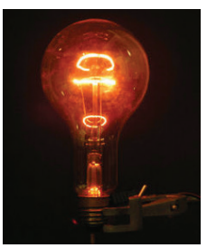
Matter is made up of atoms. Each atom consists of a positively charged nucleus with negatively charged electrons moving around the nucleus. Atoms in metals have one or more electrons which are loosely bound to the nucleus. These electrons are called free electrons and can be easily detached from the atoms. The substances which have an abundance of these free electrons are called conductors. These free electrons move randomly throughout the conductor at a given temperature. In general due to this random motion, there is no net transfer of charges from one end of the conductor to other end and hence no current in the conductor. When a potential difference is applied by the battery across the ends of the conductor, the free electrons drift towards the positive terminal of the battery, producing a net electric current. This is easily understandable from the analogy given in the Figure 2 point 1.
In the eleventh Volume 2, unit 6, we studied, that the mass move from higher gravitational potential to lower gravitational potential. Likewise, positive charge flows from region of higher electric potential to region of lower electric potential and negative charge flows from region of lower electric potential to region of higher electric potential. So battery or electric cell simply creates potential difference across the conductor.
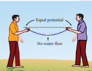
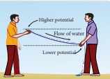
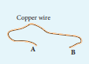
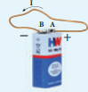
The electric current in a conductor is defined as the rate of flow of charges through a given cross-sectional area A. It is shown in the Figure 2 point 2.
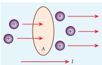
If a net charge Q passes through any cross section of a conductor in time t, then the current is defined as I equal to Q by t But charge flow is not always constant. Hence current can more generally be defined as
I average equal to del Q by del t (2 point 1)
Where del Q is the amount of charge that passes through the conductor at any cross section during the time interval ∆t. If the rate at which charge flows changes with time, the current also changes. The instantaneous current I is defined as the limit of the average current, as del t gives 0
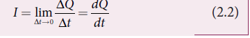
The SI unit of current is the ampere (A)
1 A equal to 1 C by 1s
That is, 1A of current is equivalent to 1 coulomb of charge passing through a perpendicular cross section in a conductor in one second. The electric current is a scalar quantity
EXAMPLE 2 point 1
Compute the current in the wire if a charge of 120 C is flowing through a copper wire in 1 minute.
Solution
The current (rate of flow of charge) in the wire is
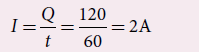
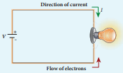
In an electric circuit, arrow heads are used to indicate the direction of flow of current. By convention, this flow in the circuit should be from the positive terminal of the battery to the negative terminal. This current is called the conventional current or simply current and is in the direction in which a positive test charge would move. In typical circuits the charges that flow are actually electrons, from the negative terminal of the battery to the positive terminal. As a result, the flow of electrons and the direction of conventional current point in opposite direction as shown in Figure 2.3. Mathematically, a transfer of positive charge is the same as a transfer of negative charge in the opposite direction.
Do you know
Electric current is not only produced by batteries. In nature, lightning bolt produces enormous electric current in a short time. During lightning, very high potential difference is created between the clouds and ground and hence charges flow between the clouds and ground.
In a conductor the charge carriers are free electrons. These electrons move freely through the conductor and collide repeatedly with the positive ions. If there is no electric field, the electrons move in random directions, and hence their velocities are also randomly oriented. On an average, the number of electrons travelling in any direction will be equal to the number of electrons travelling in the opposite direction. As a result, there is no net flow of electrons in any direction and hence there will not be any current.
Suppose a potential difference is set across the conductor by connecting a battery, an electric field E vector is created in the conductor. This electric field exerts a force on the electrons, producing a current. The electric field accelerates the electrons, while ions scatter the electrons and change their direction of motion. Thus, we see zigzag motion of electrons. In addition to the zigzag motion due to the collisions, the electrons move slowly along the conductor in a direction opposite to that of E vector as shown in the Figure 2 point 4.
Box items
Ions
Any material is made up of neutral atoms with equal number of electrons and protons. If the outermost electrons leave the atoms, they become free electrons and are responsible for electric current. The atoms after losing their outer most electrons will have more positive charges and hence are called positive ions. These ions will not move freely within the material like the free electrons. Hence the positive ions will not give rise to current.
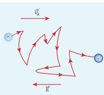
This velocity is called drift velocity vd. The drift velocity is the average velocity acquired by the electrons inside the conductor when it is subjected to an electric field. The average time between two successive collisions is called the mean free time denoted by τ. The acceleration a vector experienced by the electron in an electric field E vector is given by
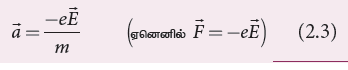
The drift velocity V d vector is given by
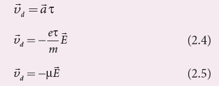
Here mew equal to e torque by m is the mobility of the electron and it is defined as the magnitude of the drift velocity per unit electric field.
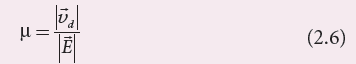
The SI unit of mobility is m square V power minus 1 s power minus 1
Note
The typical drift velocity of electrons in the wire is 10 power minus 4 m s power minus 1. If an electron drifts with this speed, then the electrons leaving the battery will take hours to reach the light bulb. Then how electric bulbs glow as soon as we switch on the battery? When battery is switched on, the electrons begin to move away from the negative terminal of the battery and this electron exerts force on the nearby electrons. This process creates a propagating influence (electric field) that travels through the wire at the speed of light. In other words, the energy is transported from the battery to bulb at the speed of light through propagating influence (electric field). Due to this reason, the bulb glows as soon as the battery is switched on.
EXAMPLE 2 point 2
If an electric field of magnitude 570 N C power minus 1, is applied in the copper wire, find the acceleration experienced by the electron.
Solution:
E equal to 570 N C power minus 1, e equal to 1.6 into 10 power minus 19 C,
m equal to 9 point 11 into 10 power minus 31 kg and a equal to?
F equal to ma equal to small e capital E
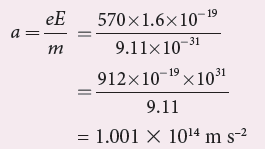
Misconception
1.There is a common misconception that the battery is the source of electrons. It is not true. When a battery is connected across the given wire, the electrons in the closed circuit resulting the current. Battery sets the potential difference (electrical energy) due to which these electrons in the conducting wire flow in a particular direction. The resulting electrical energy is used by electric bulb, electric fan etc. Similarly the electricity board is supplying the electrical energy to our home.
2. We often use the phrases like ‘charging the battery in my mobile’ and ‘my mobile phone battery has no charge’ etc. These sentences are not correct.
When we say ‘battery has no charge’, it means, that the battery has lost ability to provide energy or provide potential difference to the electrons in the circuit. When we say ‘mobile is charging’, it implies that the battery is receiving energy from A C power supply and not electrons.
Consider a conductor with area of cross section A and let an electric field E vector be applied to it from right to left. Suppose there are n electrons per unit volume in the conductor and assume that all the electrons move with the same drift velocity v d vector as shown in Figure 2 point 5.
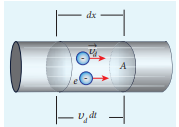
The drift velocity of the electrons equal to vd. If the electrons move through a distance dx within a small interval of dt, then
V d equal to d x by d t; d x equal to v d into d t (2 point 7)
Since A is the area of cross section of the conductor, the electrons available in the volume of length d x is
Equal to volume into number of electrons per unit volume
Equal to A d into × n (2 point 8)
Substituting for dx from equation (2 point 7) in (2 point 8)
Equal to A v d d t n
Total charge in the volume element d Q equal to (charge) into (number of electrons in the volume element)
D Q equal to (e) (A v d into d t) n
Hence the current I equal to d Q by d t
I equal to n e A v d (2 point 9)
Current density (J)
The current density (J) is defined as the current per unit area of cross section of the conductor.
J equal to I by A
The S.I unit of current density is A by m square (or) A m power minus 2.
J equal to (ne Avd) by A from equation 2 point 9)
J equal to n e v d equation 2.10
The above expression is valid only when the direction of the current is perpendicular to the area A. In general, the current density is a vector quantity and it is given b
J vector equal to n e v d vector
Substituting V d vector from equation (2 point 4)
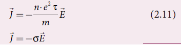
But conventionally, we take the direction of (conventional) current density as the direction of electric field. So the above equation becomes
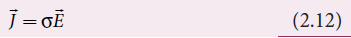
where sigma equal to n e square r by m is called conductivity.
The equation (2 point 12) is called microscopic form of ohm's law.
The inverse of conductivity is called resistivity (ρ) [Refer section 2.2.1]
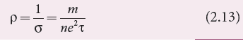
EXAMPLE 2 point 3
A copper wire of cross-sectional area 0.5 millimeter square carries a current of 0.2 A. If the free electron density of copper is 8.4 into 10 power 28 meter power minus 3 then compute the drift velocity of free electrons.
Solution
The relation between drift velocity of electrons and current in a wire of cross sectional area A is
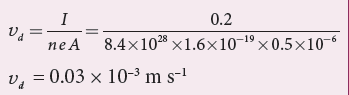
Note
Why current density is a vector but current is a scalar?
In general, the current I is defined as the scalar product of the current density and area vector in which the charges cross.
I equal to j vector dot a vector
The current I can be positive or negative depending on the choice of the unit vector normal to the surface area A.
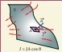
EXAMPLE 2 point 4
Determine the number of electrons flowing per second through a conductor, when a current of 32 A flows through it.
Solution
I equal to 32 A, t equal to 1 s
Charge of an electron, e equal to 1.6 into 10 power minus 19 C
The number of electrons flowing per second, n equal to what?
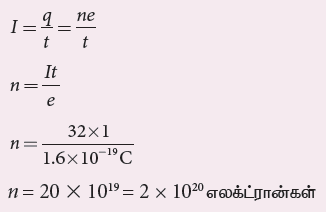
2 point 2 OHM’S LAW
The ohm’s law can be derived from the equation J equal to sigma E. Consider a segment of wire of length l and cross sectional area A as shown in Figure 2 point 7.
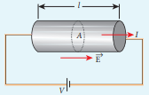
When a potential difference V is applied across the wire, a net electric field is created in the wire which constitutes the current in the wire. For simplicity, we assume that the electric field is uniform in the entire length of the wire, then the potential difference (voltage V) can be written as
V equal to E l
As we know, the magnitude of current density
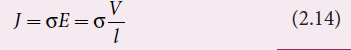
But J equal to l by A. so we write the equation (2 point 14) as
L by a equal to sigma into v by l
By rearranging the above equation, we get
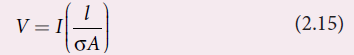
The quantity l by sigma A is called resistance of the conductor and it is denoted as R. Note that the resistance is directly proportional to the length of the conductor and inversely proportional to area of cross section.
Therefore, the macroscopic form of ohm’s law can be stated as ˝the potential difference across a given conductor is directly proportional to the current passing through it when the temperature remains constant˝.
V equal to IR (2 point 16)
From the above equation, the resistance is the ratio of potential difference across the given conductor to the current passing through the conductor
R equal to V by I (2 point 17)
The S, I unit of resistance is ohm (Ω). From the equation (2.16), we infer that the graph between current versus voltage is straight line with a slope equal to the inverse of resistance R of the conductor. It is shown in the Figure 2.8 (a).
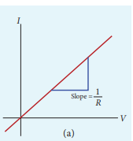
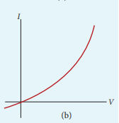
Materials for which the current versus voltage graph is a straight line through the origin, are said to obey Ohm’s law and their behaviour is said to be ohmic as shown in Figure 2 point 8 (a). Materials or devices that do not follow Ohm’s law are said to be nonohmic. These materials have more complex relationships between voltage and current. A plot of I versus V for a non-ohmic material is non-linear and they do not have a constant resistance (Figure 2 point 8 (b)).
EXAMPLE 2 point 5
A potential difference across 24 ohm resistor is 12 V. What is the current through the resistor?
Solution
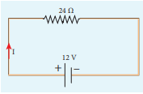
V equal to 12 V and R equal to 24 ohm
Current, I equal to?
From Ohm’s law, I equal to v by r equal to 12 by 24 equal to 0.5 a.
In the previous section, we have seen that the resistance R of any conductor is given by R equal to l by
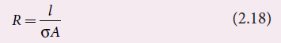
where σ is called the conductivity of the material and it depends only on the type of the material used and not on its dimension.
The resistivity of a material is equal to the reciprocal of its conductivity. P equal to 1 by sigma (2.19)
Now we can rewrite equation (2.18) using equation (2.19) R equal to ρ l by A equation (2.20)
The resistance of a material is directly proportional to the length of the conductor and inversely proportional to the area of cross section of the conductor. The proportionality constant ρ is called the resistivity of the material.
If l equal to 1 m and A equal to 1 m square , then the resistance R equal to row. In other words, the electrical resistivity of a material is defined as the resistance offered to current flow by a conductor of unit length having unit area of cross section. The S, I unit of ρ is ohm-metre (ohm m). Based on the resistivity, materials are classified as conductors, insulators and semiconductors. The conductors have lowest resistivity, insulators have highest resistivity and semiconductors have resistivity greater than conductors but less than insulators. The typical resistivity values of some conductors, insulators and semiconductors are given in the Table 2.1
Table 2 point 1 Resistivity for various materials
Material |
Resistivity, tow (ohm m) |
Insulators |
|
Pure Water |
2.5 into 10 power5 |
Glass |
10 power 10 minus 10 power 14 |
Hard Rubber |
10 power 13 minus 10 power 16 |
NaCl |
10 power 14 |
Fused Quartz |
10 power 16 |
Semiconductors |
|
Germanium |
0.46 |
Silicon |
640 |
Conductors |
|
Silver |
1.6 into 10 power minus 8 |
Copper |
1.7 into 10 power minus 8 |
Aluminium |
2.7 into 10 power minus 8 |
Tungsten |
5.6 into 10 power minus 8 |
Iron |
10 into 10 power minus 8 |
EXAMPLE 2 point 6
The resistance of a wire is 20 ohm. What will be new resistance, if it is stretched uniformly 8 times its original length?
Solution
R one equal to 20 ohm, R two equal to what?
Let the original length of the wire l one be L
New length, l two equal to 8 l one that is l two equal to 8 l
Original resistance, R one equal to row into one by a one
New resistance R two equal to row into l two by a one equal to row into 8 l by a two
Though the wire is stretched, its volume remains unchanged.
Initial volume equal to Final volume
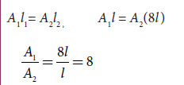
By dividing equation for R two by equation for
R one, we get
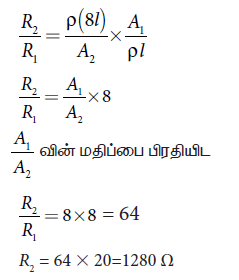
Hence, stretching the length of the wire has increased its resistance.
EXAMPLE 2 point 7
Consider a rectangular block of metal of height A, width B and length C as shown in the figure
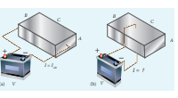
If a potential difference of V is applied between the two faces A and B of the block (figure (a)), the current I AB is observed. Find the current that flows if the same potential difference V is applied between the two faces B and C of the block (figure (b)). Give your answers in terms of I A B.
Solution
In the first case, the resistance of the block
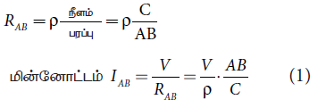
In the second case, the resistance of the block
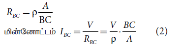
To express I B C interms of I A B, we multiply and divide equation (2) by A C, we get
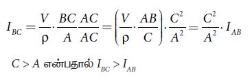
Do You Know
The human body contains a large amount of water which has low resistance of around 200 ohm and the dry skin has high resistance of around 500 k ohm. But when the skin is wet, the resistance is reduced to around 1000 ohm. This is the reason why repairing the electrical connection with the wet skin is always dangerous.
An electric circuit may contain a number of resistors which can be connected in different ways. For each type of circuit, we can calculate the equivalent resistance produced by a group of individual resistors.
Resistors in series
When two or more resistors are connected end to end, they are said to be in series. The resistors could be simple resistors or bulbs or heating elements or other devices. Figure 2 point 9 (a) shows three resistors R one, R two and R three connected in series.
The amount of charge passing through resistor R1 must also pass through resistors R two and R three since the charges cannot accumulate anywhere in the circuit. Due to this reason, the current I passing through all the three resistors is the same. According to Ohm’s law, if same current pass-through different resistors of different values, then the potential difference across each resistor must be different. If V one, V two and V three be the potential differences (voltage) across each of the resistors R one, R two and R three respectively, then we can write V one equal to I R one, V two equal to I R two and V three equal to I R three. But the supply voltage V must be equal to the sum of voltages (potential differences) across each resistor
V equal to V one plus, V two plus, V three equal to I R one plus I R two plus I R three (2 point 21)
V equal to I (R one plus R two plus R three)
V equal to I R s (2 point 22)
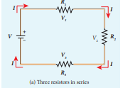
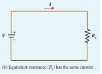
where R s is the equivalent resistance.
R s equal to R one plus R two plus R three equation (2.23)
When several resistors are connected in series, the total or equivalent resistance is the sum of the individual resistances as shown in the Figure 2 point 9 (b).
Note: The value of equivalent resistance in series connection will be greater than each individual resistance.
EXAMPLE 2 point 8
Calculate the equivalent resistance for the circuit which is connected to 24 V battery and also find the potential difference across each resistor in the circuit.
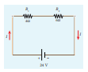
Solution
Since the resistors are connected in series, the effective resistance in the circuit
equal to 4 ohm plus 6 ohm equal to 10 ohm
current I in the circuit equal to v by r e q equal to 24 by 10 equal to 2.4 A
Voltage across 4 ohm resistor
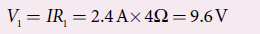
Voltage across 6 ohm resistor
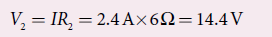
Resistors in parallel
Resistors are in parallel when they are connected across the same potential difference as shown in Figure 2 point 10 (a).
In this case, the total current I that leaves the battery is split into three separate components. Let I one, I two and I three be the current through the resistors R one, R two and R three respectively. Due to the conservation of charge, total current in the circuit I is equal to sum of the currents through each of the three resistors.
I equal to I one plus I two plus I three (2 point 24)
Since the voltage across each resistor is the same, applying Ohm’s law to each resistor, we have
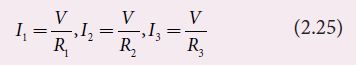
Substituting these values in equation (2.24), we get
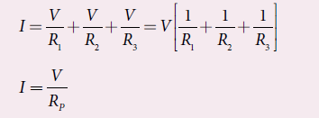
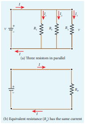
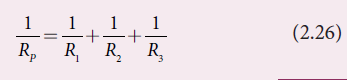
Here R P is the equivalent resistance of the parallel combination of the resistors. Thus, when a number of resistors are connected in parallel, the sum of the reciprocals of resistance of the individual resistors is equal to the reciprocal of the effective resistance of the combination as shown in the Figure 2 point 10 (b).
Note: The value of equivalent resistance in parallel connection will be lesser than each individual resistance.
House hold appliances are always connected in parallel so that even if one is switched off, the other devices could function properly.
EXAMPLE 2 point 9
Calculate the equivalent resistance in the following circuit and also find the values of current I, I 1 and I 2 in the given circuit
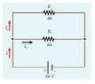
Solution
Since the resistances are connected in parallel, the equivalent resistance in the circuit is
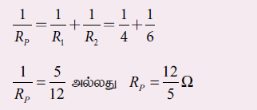
The resistors are connected in parallel, the potential difference (voltage) across them is the same.
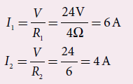
The current I is the sum of the currents in the two branches. Then,
I equal to I1 plus I2 equal to 6A plus 4A equal to 10A
EXAMPLE 2 point 10
Two resistors when connected in series and parallel, their equivalent resistances are 15 ohm and 56 by 15 ohm respectively. Find the values of the resistances
Solution
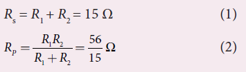
From equation (1) substituting for Rx plus R two in equation (2)
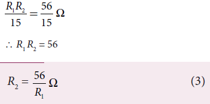
Substituting for R two in equation (1) from equation (3)
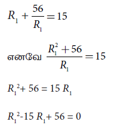
The above equation can be solved using factorisation
R one equal to 8 ohm or R one equal to 7 ohm
R one equal to 8 ohm
Substituting in equation (1)
8 plus R two equal to 15
R two equal to 15 minus 8 equal to 7 ohm,
R two equal to 7 ohm, that is R one equal to 8 ohm; R two equal to 7 ohm)
If R one equal to 7 ohm
Substituting in equation (1)
7 plus R two equal to 15
R two equal to 8 ohm, that is when R one equal to 7 ohm; R two equal to 8 ohm)
EXAMPLE 2 point 11
Calculate the equivalent resistance between A and B in the given circuit
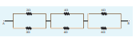
In all the sections, the resistors are connected in parallel.
Section 1
Section 2
Section 3
The circuit becomes,
Equivalent resistance between A and B is
EXAMPLE 2 point 12
Five resistors are connected in the configuration as shown in the figure. Calculate the equivalent resistance between the points a and b.
Solution
Case (a)
To find the equivalent resistance between the points a and b, we assume that a current is entering the junction at a. Since all the resistances in the outside loop are the same (1 ohm), the current in the branches ac and ad must be equal. Hence the points C and D are at the same potential and no current through 5 ohm. It implies that the 5 ohm has no role in determining the equivalent resistance and it can be removed. So the circuit is simplified as shown in the figure.
The equivalent resistance of the circuit between a and b is R c v equal to 1 ohm.
Carbon resistors consists of a ceramic core, on which a thin layer of crystalline carbon is deposited as shown in Figure 2 point 11. These resistors are inexpensive, stable and compact in size. Colour rings are used to indicate the value of the resistance according to the rules given in the Table 2 point 2.
Three coloured rings are used to indicate the values of a resistor: the first two rings1rrrrare significant figures of resistances, the third ring indicates the decimal multiplier after them. The fourth colour, silver or gold shows the tolerance of the resistor at 10 percentage or 5 percentage as shown in the Figure 2 point 12. If there is no fourth ring, the tolerance is 20 percentage.
Table 2 point 2 Colour Coding for Resistors
Colour |
Number Multiplier |
Tolerance |
|
black |
0 |
1 |
|
Brown |
1 |
10 power 1 |
|
Red |
2 |
10 power 2 |
|
Orange |
3 |
10 power 3 |
|
Yellow |
4 |
10 power 4 |
|
Green |
5 |
10 power 5 |
|
Blue |
6 |
10 power 6 |
|
Violet |
7 |
10 power 7 |
|
Gray |
8 |
10 power 8 |
|
white |
9 |
10 power 9 |
|
Gold |
|
10 power minus 1 |
5 percentage |
Sliver |
|
10 power minus 2 |
10 percentage |
Colourless |
|
|
20 percentage |
For the resistor shown in Figure 2.12, the first digit equal to 5 (green), the second digit equal to 6 (blue), decimal multiplier equal to 10 power 3 (orange) and tolerance equal to 5 percentage (gold). The value of resistance equal to 56 into 10 power 3 ohm or 56 kilo ohm with the tolerance value 5 percentage.
Note
While reading the colour code, hold the resistor with colour bands to your left. Resistors never start with a metallic band on the left
The resistivity of a material is dependent on temperature. It is experimentally found that for a wide range of temperatures, the resistivity of a conductor increases with increase in temperature according to the expression,
where row t is the resistivity of a conductor at T not C, row not is the resistivity of the conductor at some reference temperature T not (usually at 20 degree C) and alpha is the temperature coefficient of resistivity. It is defined as the ratio of increase in resistivity per degree rise in temperature to its resistivity at T not.
From the equation (2 point 27), we can write
row t minus row not equal to alpha row not (T minus t not)
where del row equal to row T minus row not is change in resistivity for a change in temperature del T equal to T minus T not. Its unit is per degree Celsius
alpha of conductors
For conductors alpha is positive. If the temperature of a conductor increases, the average kinetic energy of electrons in the conductor increases. This results in more frequent collisions and hence the resistivity increases. The graph of the equation (2 point 27) is shown in Figure 2 point 13.
Even though, the resistivity of conductors like metals varies linearly for wide range of temperatures, there also exists a nonlinear region at very low temperatures. The resistivity approaches some finite value as the temperature approaches absolute zero as shown in Figure 2 point 13(b)
Using the equation row equal to R A by 1 in equation (2 point 27), we get the expression for the resistance of a conductor at temperature T degree C as
The temperature coefficient of resistivity can also be obtained from the equation (2.28)
Where del R equal to R small r minus R during the change in temperature del T equal to T minus T
alpha of semiconductors
For semiconductors, the resistivity decreases with increase in temperature. As the temperature increases, more electrons will be liberated from their atoms (Refer unit 9 for conduction in semi conductors).
Hence the current increases and therefore the resistivity decreases as shown in Figure 2 point 14. A semiconductor with a negative temperature coefficient of resistivity is called a thermistor.
The typical values of temperature coefficients of various materials are given in table 2.3.
Material |
Temperature Coefficient of resistivity alpha degree c power minus 1 |
Silver |
3.8 into 10 power minus 3 |
Copper |
3.9 into 10 power minus 3 |
Gold |
3.4 into 10 power minus 3 |
Aluminum |
3.9 into 10 power minus 3 |
Tungsten |
4.5 into 10 power minus 3 |
Iron |
5.0 into 10 power minus 3 |
Platinum |
3.92 into 10 power minus 3 |
Lead |
3.9 into 10 power minus 3 |
Nichrome |
0.4 into 10 power minus 3 |
Carbon |
Minus 0.5 into 10 power minus 3 |
Germanium |
Minus 48 into 10 power minus 3 |
Silicon |
Minus 75 into 10 power minus 3 |
We can understand the temperature dependence of resistivity in the following way. In section 2.1.3, we have shown that the electrical conductivity, sigma equal to n e square tow by m As the resistivity is inverse of sigma, it can be written as
The resistivity of materials is
1. inversely proportional to the number density (n) of the electrons
2. inversely proportional to the average time between the collisions (τ).
In metals, if the temperature increases, the average time between the collision (τ) decreases and n is independent of temperature. In semiconductors when temperature increases, n increases and tow decreases, but increase in n is dominant than decreasing tow, so that overall resistivity decreases.
Do you know
The resistance of certain materials become zero below certain temperature T c. This temperature is known as critical temperature or transition temperature. The materials which exhibit this property are known as superconductors. This phenomenon was first observed by Kammerlingh Onnes in 1911. He found that mercury exhibits superconductor behaviour at 4 point 2 K. Since R equal to 0, current once induced in a superconductor persists without any potential difference.
EXAMPLE 2 point 13
If the resistance of coil is 3 ohm at 20 degree celcius and α equal to 0.004 by celcius then determine its resistance at 100 degree celsius.
Solution
R not equal to 3 ohm, T equal to 100 degree C, T not equal to 20 degree C
Α equal to 0.004 by degree C, R T equal to what?
RT equal to R not (1 plus alpha (T minus T not))
R 100 equal to 3 (1 plus 0.004 into 80)
R 100 equal to 3.96 ohm.
EXAMPLE 2.14
Resistance of a material at 20 degree C and 40 degree C are 45 ohm and 85 ohm respectively. Find its temperature coefficient of resistivity.
Solution
T 0 equal to 20 degree Celsius, T equal to 40 degree Celsius, R not equal to 45 ohm, R equal to 85 ohm
When a battery is connected between the ends of a conductor, a current is established. The battery is supplying energy to the device which is connected in the circuit. Consider a circuit in which a battery of voltage V is connected to the resistor as shown in Figure 2 point 15.
Assume that a positive charge of d Q moves from point a to b through the battery and moves from point c to d through the resistor and back to point a. When the charge moves from point a to b, it gains potential energy d U equal to V dot d Q and the chemical potential energy of the battery decreases by the same amount. When this charge d Q passes through resistor it loses the potential energy d U equal to V dot d Q due to collision with atoms in the resistor and again reaches the point a. This process occurs continuously till the battery is connected in the circuit. The rate at which the charge loses its electrical potential energy in the resistor can be calculated.
The electrical power P is the rate at which the electrical potential energy is delivered,
Since the electric current I equal to d q by dt the equation (2 point 31) can be rewritten as
P equal to V I equation (2 point 32)
This expression gives the power delivered by the battery to any electrical system, where I is the current passing through it and V is the potential difference across it. The S I unit of electrical power is watt (1 W equal to 1 J s minus 1). Commercially, the electrical bulbs used in houses come with the power and voltage rating of 5 W minus 220 V, 30 W minus 220 V, 60 W minus 220 V etc. (Figure 2 point 16).
Usually these voltage rating refers A C R M S voltages. For a given bulb, if the voltage drop across the bulb is greater than voltage rating, the bulb will fuse.
Using Ohm’s law, power delivered to the resistance R is expressed in other forms
Do you know
The electrical power produced (dissipated) by a resistor is I2 R. It depends on the square of the current. Hence, if current is doubled, the power will increase by four times. Similar explanation holds true for voltage also.
The total electrical energy used by any device is obtained by multiplying the power and duration of the time when it is ON. If the power is in watts and the time is in seconds, the energy will be in joules. In practice, electrical energy is measured in kilowatt hour (kilo What). 1 kilo What is known as 1 unit of electrical energy.
(1 kilo wats equal to 1000 wats equal to (1000 W) (3600 s) equal to 3.6 into 10 power 6 J)
Do You Know
The Tamilnadu Electricity Board is charging for the amount of energy you use and not for the power. A current of 1 A flowing through a potential difference of 1 V produces a power of 1 W
EXAMPLE 2 point 15
A battery of voltage V is connected to 30 W bulb and 60 W bulb as shown in the figure. (a) Identify brightest bulb (b) which bulb has greater resistance? (c) Suppose the two bulbs are connected in series, which bulb will glow brighter?
Solution
(a) The power delivered by the battery P equal to V, I. Since the bulbs are connected in parallel, the voltage drop across each bulb is the same. If the voltage is kept fixed, then the power is directly proportional to current (P direct proportional to I). So 60 W bulb draws twice as much as current as 30 Wats and it will glow brighter than 30 Wats bulb.
(b) To calculate the resistance of the bulbs, we use the relation P equal to V power 2 by R. In both the bulbs, the voltage drop is the same. So the power is inversely proportional to the resistance or resistance is inversely proportional to the power r infinitive one by p. It implies that, the 30 W has twice as much as resistance as 60 W bulb.
(c) When the bulbs are connected in series, the current passing through each bulb is the same. It is equivalent to two resistors connected in series. The bulb which has higher resistance has higher voltage drop. So 30 W bulb will glow brighter than 60 W bulb. So the higher power rating does not always imply more brightness and it depends whether bulbs are connected in series or parallel.
EXAMPLE 2 point 16
Two electric bulbs marked 20 Wats minus 220 Volts and 100 Wats minus 220 Volts are connected in series to 440 Volts supply. Which bulb will get fused?
Solution
To check which bulb will get fused, the voltage drop across each bulb has to be calculated. The resistance of the bulb,
R equal to V square by p equal to Rated voltage hole square divided by rated power
For 100 Watts minus 220 Volt bulb,
For 100W-220V bulb,
Both the bulbs are connected in series. So same current will pass through both the bulbs. The current that passes through the circuit, I equal to v by r total
The voltage drop across the 20 W bulb is
The voltage drop across the 100 Watt bulb is
The 20 W bulb will get fused because the voltage across it is more than the voltage rating.
An electric cell converts chemical energy into electrical energy to produce electricity. It contains two electrodes (carbon and zinc) immersed in an electrolyte (sulphuric acid) as shown in Figure 2 point 17.
Several electric cells connected together form a battery. When a cell or battery is connected to a circuit, electrons flow from the negative terminal to the positive terminal through the circuit. By using chemical reactions, a battery produces potential difference across its terminals. This potential difference provides the energy to move the electrons through the circuit. Commercially available electric cells and batteries are shown in Figure 2 point 18.
A battery or cell is called a source of electromotive force (emf). The term ‘electromotive force’ is a misnomer since it does not really refer to a force but describes a potential difference in volts. The emf of a battery or cell is the voltage provided by the battery when no current flows in the external circuit. It is shown in Figure 2 point 19.
Electromotive force determines the amount of work a battery or cell has to do move a certain amount of charge around the circuit. It is denoted by the symbol ε. An ideal battery has zero internal resistance and the potential difference (terminal voltage) across the battery equals to its emf. In reality, the battery is made of electrodes and electrolyte, there is resistance to the flow of charges within the battery. This resistance is called internal resistance r. For a real battery, the terminal voltage is not equal to the emf of the battery. A freshly prepared cell has low internal resistance and it increases with ageing.
The circuit connections are made as shown in Figure 2 point 20. The emf of cell ε is measured by connecting a high resistance voltmeter across it without connecting the external resistance R as shown in Figure 2 point 20 (a). Since the voltmeter draws very little current for deflection, the circuit may be considered as open. Hence the voltmeter reading gives the emf of the cell. Then, external resistance R is included in the circuit and current I is established in the circuit. The potential difference across R is equal to the potential difference across the cell (V) as shown in Figure 2 point 20 (b).
The potential drop across the resistor R is
V equal to capital I capital R (2 point 35)
Due to internal resistance r of the cell, the voltmeter reads a value V, which is less than the emf of cell epsilon. It is because, certain amount of voltage (I r) has dropped across the internal resistance r.
Then V equal to epsilon minus capital I small r
Dividing equation (2 point 36) by equation (2 point 35), we get
Since epsilon, V and R are known, internal resistance r can be determined. We can also find the total current that flows in the circuit.
Due to this internal resistance, the power delivered to the circuit is not equal to power rating mentioned in the battery. For a battery of e m f epsilon, with an internal resistance r, the power delivered to the circuit of resistance R is given by
P equal to I epsilon equal to I (V plus I r) (from equation 2 point 36)
Here V is the voltage drop across the resistance R and it is equal to I R.
Therefore, P equal to I (I R plus I r)
Here I square r is the power delivered to the internal resistance and I 2 R is the power delivered to the electrical device (here it is the resistance R). For a good battery, the internal resistance r is very small, then capital I square small r very less than capital I square capital R and almost entire power is delivered to the external resistance.
Ezample 2 point 17
A battery has an emf of 12 V and connected to a resistor of 3 ohm. The current in the circuit is 3.93 A. Calculate (a) terminal voltage and the internal resistance of the battery (b) power delivered by the battery and power delivered to the resistor
Solution
The given values I equal to 3.93 A, epsilon equal to 12 V, R equal to 3 ohm
(a) The terminal voltage of the battery is equal to voltage drop across the resistor
V equal to I R equal to 3.93 into 3 equal to 11.79 V
The internal resistance of the battery,
(b) The power delivered by the battery P equal to I epsilon equal to 3.93 into 12 equal to 47.1 W The power delivered to the resistor equal to I square R equal to 46.3 W
The remaining power P equal to (47.1 minus 46.3) equal to 0.8 W is delivered to the internal resistance and cannot be used to do useful work. (It is equal to I square r).
Several cells can be connected to form a battery. In series connection, the negative terminal of one cell is connected to the positive terminal of the second cell, the negative terminal of second cell is connected to the positive terminal of the third cell and so on. The free positive terminal of the first cell and the free negative terminal of the last cell become the terminals of the battery.
Suppose n cells, each of emf ε volts and internal resistance r ohms are connected in series with an external resistance R as shown in Figure 2 point 21
The total emf of the battery equal to n epsilon
The total resistance in the circuit equal to nr plus R
By Ohm’s law, the current in the circuit is
Case (a) If small r very less than capital R, then,
where, I one is the current due to a single cell (I one equal to epsilon by capital R)
Thus, if r is negligible when compared to R the current supplied by the battery is n times that supplied by a single cell
It is the current due to a single cell. That is, current due to the whole battery is the same as that due to a single cell and hence there is no advantage in connecting several cells.
Thus series connection of cells is advantageous only when the effective internal resistance of the cells is negligibly small compared with R.
EXAMPLE 2 point 18
From the given circuit,
Find
Solution
1. Equivalent emf of the combination Epsilon e q equal to n epsilon equal to 4 into 9 equal to 36 V
2. Equivalent internal resistance r eq equal to n r equal to 4 into 0.1 equal to 0.4 ohm
3. Total current
4. Potential difference across external resistance V equal to IR equal to 3.46 into 10 equal to 34.6 V. The remaining 1.4 V is dropped across the internal resistances of cells.
5. Potential difference across each cell v by n equal to 31.6 by 4 equal to 8.65 v.
2 point 4 point 4 Cells in parallel
In parallel connection all the positive terminals of the cells are connected to one point and all the negative terminals to a second point. These two points form the positive and negative terminals of the battery.
Let n cells be connected in parallel between the points A and B and a resistance R is connected between the points A and B as shown in Figure 2 point 22. Let epsilon be the emf and r the internal resistance of each cell
The equivalent internal resistance of the battery is .
The total emf is the potential difference between the points A and B, which is equal to epsilon. The current in the circuit is given by
Where I one is the current due to a single cell (epsilon divided by small r) when capital R is negligible? Thus, the current through the external resistance due to the whole battery is n times the current due to a single cell.
Case (b)
If r very less than capital R, then capital I equal to epsilon by capital R equation (2.44)
The above equation implies that current due to the whole battery is the same as that due to a single cell. Hence it is advantageous to connect cells in parallel when the external resistance is very small compared to the internal resistance of the cells.
Do you know
When the car engine is started with headlights turned on, they sometimes become dim. This is due to the internal resistance of the car battery
EXAMPLE 2 point 19
For the given circuit
Find
Solution
a. Equivalent emf epsilon eq equal to 5 V
b. Equivalent internal resistance
c. total current, capital I equal to epsilon by capital R plus small r by n
d. Potential difference across each cell
V equal to capital I capital R equal to 0.5 into 10 equal to 5 V
e. Current from each cell, I dash equal to capital I by n
Ohm’s law is useful only for simple circuits. For more complex circuits, Kirchhoff ’s rules can be used to find current and voltage. There are two generalized rules: 1. Kirchhoff ’s current rule 2. Kirchhoff ’s voltage rule.
It states that the algebraic sum of the currents at any junction of a circuit is zero. It is a statement of law of conservation of electric charge. The charges that enter a given junction in a circuit must leave that junction since charge cannot build up or disappear at a junction. By convention, current entering the junction is taken as positive and current leaving the junction is taken as negative
Applying this law to the junction A in Figure 2.23
EXAMPLE 2 point 20
For the given circuit find the value of I
Solution
Applying Kirchhoff ’s rule to the point P in the circuit,
The arrows pointing towards P are positive and away from P are negative.
Therefore, 0.2 A minus 0.4 A plus 0.6 A minus 0.5 A plus 0.7 A minus I equal to 0
1.5 A minus 0.9 A minus I equal to 0
0.6 A minus I equal to 0
I equal to 0.6 A
It states that in a closed circuit the algebraic sum of the products of the current and resistance of each part of the circuit is equal to the total emf included in the circuit. This rule follows from the law of conservation of energy for an isolated system (The energy supplied by the emf sources is equal to the sum of the energy delivered to all resistors). The product of current and resistance is taken as positive when the direction of the current is followed. Suppose if the direction of current is opposite to the direction of the loop, then product of current and voltage across the resistor is negative. It is shown in Figure 2 point 24 (a) and (b). The emf is considered positive when proceeding from the negative to the positive terminal of the cell. It is shown in Figure 2 point 24 (c) and (d).
Kirchhoff’s voltage rule has to be applied only when all currents in the circuit reach a steady state condition (the current in various branches are constant).
EXAMPLE 2 point 21
The following figure shows a complex network of conductors which can be divided into two closed loops like E A C E and A B C A. Apply Kirchhoff’s voltage rule (K V R),
Solution
Thus applying Kirchhoff ’s second law to the closed loop E A C E
and for the closed loop A, B, C, A
EXAMPLE 2 point 22
Calculate the current that flows in the 1 ohm resistor in the following circuit.
Solution
We can denote the current that flows from 9 V battery as I one and it splits up into I two and (I one minus I two) at the junction E according Kirchhoff ’s current rule (K C R).
Now consider the loop E F C B E and apply K V R, we get
Applying K V R to the loop E, A, D, F, E, we get
Solving equation (1) and (2), we get
I1 equal to 1.83 A and I2 equal to minus 0.13 A
It implies that the current in the one ohm resistor flows from F to E
An important application of Kirchhoff ’s rules is the Wheatstone’s bridge. It is used to compare resistances and in determining the unknown resistance in electrical network. The bridge consists of four resistances P, Q, R and S connected as shown in Figure 2 point 25. A galvanometer G is connected between the points B and D. The battery is connected between the points A and C. The current through the galvanometer is I G and its resistance is G.
Applying Kirchhoff ’s current rule to junction B and D respectively.
Applying Kirchhoff ’s voltage rule to loop ABDA,
Applying Kirchhoff ’s voltage rule to loop ABCDA,
When the points B and D are at the same potential, the bridge is said to be balanced. As there is no potential difference between B and D, no current flows through galvanometer (IG equal to 0). Substituting IG equal to 0 in equation (2 point 45), (2 point 46) and (2 point 47), we get
I one equal to I three equation (2 point 49)
I two equal to four equation (2 point 50)
I one p equal to I two R equation 2 point 51
Using equation (2 point 51) in equation (2 point 48)
Dividing equation (2 point 52) by equation (2 point 51), we get
This is the condition for bridge balance. Only under this condition, galvanometer shows null deflection. Suppose we know the values of two adjacent resistances, the other two resistances can be compared. If three of the resistances are known, the value of unknown resistance (fourth one) can be determined.
Do You Know
A galvanometer is an instrument used for detecting and measuring even very small electric currents. It is extensively useful to compare the potential difference between various parts of the circuit.
EXAMPLE 2 point 23
In a Wheatstone’s bridge P equal to 100 ohm, Q equal to 1000 ohm and R equal to 40 ohm. If the galvanometer shows zero deflection, determine the value of S.
Solution
EXAMPLE 2 point 24
What is the value of x when the Wheatstone’s network is balanced?
P equal to 500 ohm, Q equal to 800 ohm, R equal to X plus 400, S equal to 1000 ohm
Solution
when the network is balanced
The meter bridge is another form of Wheatstone’s bridge. It consists of a uniform wire of magainin A B of one meter length. This wire is stretched along a meter scale on a wooden board between two copper strips C and D. Between these two copper strips another copper strip E is mounted to enclose two gaps G one and G two as shown in Figure 2 point 26.
An unknown resistance P is connected in G one and a standard resistance Q is connected in G two. A jockey (conducting wire-contact maker) is connected to the terminal E on the central copper strip through a galvanometer (G) and a high resistance (H R). The exact position of jockey on the wire can be read on the scale. A Lechlanche cell and a key (K) are connected between the ends of the bridge wire.
The position of the jockey on the wire is adjusted so that the galvanometer shows zero deflection. Let the position of jockey at the wire be at J. The resistances corresponding to A J and J B of the bridge wire form the resistances R and S of the Wheatstone’s bridge. Then for the bridge balance
where r is the resistance per unit length of wire.
The bridge wire is soldered at the ends of the copper strips. Due to imperfect contact, some resistance might be introduced at the contact. These are called end resistances. This error can be eliminated, if another set of readings is taken with P and Q interchanged and the average value of P is found.
To find the specific resistance of the material of the wire in the coil P, the radius a and length l of the wire are measured. The specific resistance or resistivity ρ can be calculated using the relation
Resistance equal to ρ l by A
By rearranging the above equation, we get
Row equal to resistance into capital A by capital l (2 point 57)
If is the unknown resistance equation (2 point 57) becomes,
row equal to p into pai a square by l
EXAMPLE 2 point 25
In a meter bridge experiment with a standard resistance of 15 ohm in the right gap, the ratio of balancing length is 3:2. Find the value of the other resistance.
Solution
EXAMPLE 2 point 26
In a meter bridge experiment, the value of resistance in the resistance box connected in the right gap is 10 ohm. The balancing length is l one equal to 55 c m. Find the value of unknown resistance
Solution
Potentiometer is used for the accurate measurement of potential differences, current and resistances. It consists of ten meter long uniform wire of manganin or constantan stretched in parallel rows each of 1 meter length, on a wooden board. The two free ends A and B are brought to the same side and fixed to copper strips with binding screws. A meter scale is fixed parallel to the wire. A jockey is provided for making contact.
The principle of the potentiometer is illustrated in Figure 2 point 27. A steady current is maintained across the wire C D by a battery Bt. The battery, key and the potentiometer wire connected in series form the primary circuit. The positive terminal of a primary cell of emf ε is connected to the point C and negative terminal is connected to the jockey through a galvanometer G and a high resistance HR. This forms the secondary circuit.
Let the contact be made at any point J on the wire by jockey. If the potential difference across C J is equal to the emf of the cell ε, then no current will flow through the galvanometer and it will show zero deflection. C J is the balancing length l. The potential difference across C J is equal to I r l where I is the current flowing through the wire and r is the resistance per unit length of the wire.
Hence ε equal to I r l (2 point 58)
Since I and r are constants, epsilon direct proportional to l. The emf of the cell is directly proportional to the balancing length
To compare the emf of two cells, the circuit connections are made as shown in Figure 2 point 28. Potentiometer wire C D is connected to a battery B t and a key K in series. This is the primary circuit. The end C of the wire is connected to the terminal M of a D, P, D, T (Double Pole Double Throw) switch and the other terminal N is connected to a jockey through a galvanometer G and a high resistance H R. The cells whose e m f epsilon one and epsilon two to be compared are connected to the terminals M one, N one and M two, N two of the D, P, D, T switch. The positive terminals of B t, epsilon one and epsilon two should be connected to the same end C.
The D, P, D, T switch is pressed towards M one, N one so that cell epsilon one is included in the secondary circuit and the balancing length l one is found by adjusting the jockey for zero deflection. Then the second cell epsilon two is included in the circuit and the balancing length l two is determined. Let r be the resistance per unit length of the potentiometer wire and I be the current flowing through the wire
we have
epsilon one equal to I r l one equation (2.59)
epsilon two equal to I r l two equation (2.60)
By dividing equation by
By including a rheostat (R h) in the primary circuit, the experiment can be repeated several times by changing the current flowing through it.
To measure the internal resistance of a cell, the circuit connections are made as shown in Figure 2 point 29. The end C of the potentiometer wire is connected to the positive terminal of the battery B t and the negative terminal of the battery is connected to the end D through a key K one. This forms the primary circuit
The positive terminal of the cell of emf epsilon whose internal resistance is to be determined is also connected to the end C of the wire. The negative terminal of the cell epsilon is connected to a jockey through a galvanometer and a high resistance. A resistance box R and key K two are connected across the cell epsilon. With K two open, the balancing point J is obtained and the balancing length C J equal to l one is measured. Since the cell is in open circuit, its emf is
E infinitive l equation (2 point 62)
A suitable resistance (say, 10 ohm) is included in the resistance box and key K two is closed. Let r be the internal resistance of the cell. The current passing through the cell and the resistance R is given by
The potential difference across is
When this potential difference is balanced on the potentiometer wire, let I two be the balancing length.
From equations 2 point 62 and 2 point 63.
Substituting the values of the R, l one and l two, the internal resistance of the cell is determined. The experiment can be repeated for different values of R. It is found that the internal resistance of the cell is not constant but increases with increase of external resistance connected across its terminals.
When current flows through a resistor, some of the electrical energy delivered to the resistor is converted into heat energy and it is dissipated. This heating effect of current is known as Joule’s heating effect. Just as current produces thermal energy, thermal energy may also be suitably used to produce an electromotive force. This is known as thermoelectric effect.
If a current I flows through a conductor kept across a potential difference V for a time t, the work done or the electric potential energy spent is
W equal to V I t equation (2 point 66)
In the absence of any other external effect, this energy is spent in heating the conductor. The amount of heat (H) produced is
H equal to V I t equation (2 point 67)
For a resistance R,
This relation was experimentally verified by Joule and is known as Joule’s law of heating. It states that the heat developed in an electrical circuit due to the flow of current varies directly as
1. the square of the current
2. the resistance of the circuit and
3. the time of flow.
EXAMPLE 2 point 27
Find the heat energy produced in a resistance of 10 ohm when 5 A current flows through it for 5 minutes.
Solution
R equal to 10 ohm, I equal to 5 A, t equal to 5 minutes equal to 5 into 60 s
H equal to I square R t
Equal to 52 into 10 into 5 into 60
Equal to 25 into 10 into 300
Equal to 25 into 3000
Equal to 75000 J (or) 75 kilo Juile
1. Electric heaters
Electric iron, electric heater, electric toaster shown in Figure 2 point 30 are some of the home appliances that utilize the heating effect of current. In these appliances, the heating elements are made of nichrome, an alloy of nickel and chromium. Nichrome has a high specific resistance and can be heated to very high temperatures without oxidation.
EXAMPLE 2 point 28
An electric heater of resistance 10 ohm connected to 220 V power supply is immersed in the water of 1 kilogram. How long the electrical heater has to be switched on to increase its temperature from 30 degree C to 60 degree C. (Specific heat capacity of water is s equal to 4200 J kilogram power minus 1 K power minus 1)
Solution
According to Joule’s heating law H equal to I square R t
The current passed through the electrical heater equal to 220V by 10 ohm equal to 22A
Heat produced in one second by the electrical heater H equal to I square R
Heat produced in one second
H equal to (22)2 into 10 equal to 4840 J equal to 4.84 kilo Juile. In fact the power rating of this electrical heater is 4.84 k W.
The amount of heat energy to increase the temperature of 1kilogram water from 30 degree C to 60 degree C is Q equal to m s del T (Refer eleventh physics vol 2, unit 8)
Here m equal to 1 kg,
s equal to 4200 J kilo gram power minus 1 K power minus 1
del T equal to 30 K,
so Q equal to 1 into 4200 into 30 equal to 126 kJ
The time required to produce this heat energy
2. Electric fuses
Fuses as shown in Figure 2 point 31, are connected in series in a circuit to protect the electric devices from the heat developed by the passage of excessive current. It is a short length of a wire made of a low melting point material. It melts and breaks the circuit if current exceeds a certain value. An alloy of lead - tin is used for fuses when current rating is below 15 A and when current rating is above 15 A, copper fuse wires are used. The only disadvantage with the above fuses is that once fuse wire is burnt due to excessive current, they need to be replaced. Nowadays in houses, circuit breakers
(trippers) are also used instead of fuses. Whenever there is an excessive current produced due to faulty wire connection, the circuit breaker switch opens. After repairing the faulty connection, we can close the circuit breaker switch. It is shown in the Figure 2 point 32.
3. Electric furnace
Furnaces as shown in Figure 2 point 33 are used to manufacture a large number of technologically important materials such as steel, silicon carbide, quartz, gallium arsenide, etc. To produce temperatures up to 1500 degree C, molybdenum-nichrome wire wound on a silica tube is used. Carbon arc furnaces produce temperatures up to 3000 degree C
4. Electrical lamp
It consists of a tungsten filament (melting point 33800 C) kept inside a glass bulb and heated to incandescence by current. In incandescent electric lamps only about 5 percentage of electrical energy is converted into light and the rest is wasted as heat. Electric discharge lamps, electric welding and electric arc also utilize the heating effect of current as shown in Figure 2 point 34.
Conversion of temperature differences into electrical voltage and vice versa is known as thermoelectric effect. A thermoelectric device generates voltage when there is a temperature difference on each side. If a voltage is applied, it generates a temperature difference.
Seebeck discovered that in a closed circuit consisting of two dissimilar metals, when the junctions are maintained at different temperatures an emf (potential difference) is developed. The current that flows due to the emf developed is called thermoelectric current. The two dissimilar metals connected to form two junctions is known as thermocouple (Figure 2 point 35).
If the hot and cold junctions are interchanged, the direction of current also reverses. Hence the effect is reversible.
The magnitude of the emf developed in a thermocouple depends on (1) the nature of the metals forming the couple and (2) the temperature difference between the junctions.
Applications of Seebeck effect
1. Seebeck effect is used in thermoelectric generators (Seebeck generators). These thermoelectric generators are used in power plants to convert waste heat into electricity.
2. This effect is utilized in automobiles as automotive thermoelectric generators for increasing fuel efficiency.
3. Seebeck effect is used in thermocouples and thermopiles to measure the temperature difference between the two objects
In 1834, Peltier discovered that when an electric current is passed through a circuit of a thermocouple, heat is evolved at one junction and absorbed at the other junction. This is known as Peltier effect.
In the C u - F e thermocouple the junctions A and B are maintained at the same temperature. Let a current from a battery flow through the thermocouple (Figure 2.36 (a)). At the junction A, where the current flows from C u to Fe, heat is absorbed and the junction A becomes cold. At the junction B, where the current flows from Fe to C u heat is liberated and it becomes hot. When the direction of current is reversed, junction A gets heated and junction B gets cooled as shown in the Figure 2.36 (b). Hence Peltier effect is reversible.
Thomson showed that if two points in a conductor are at different temperatures, the density of electrons at these points will differ and as a result the potential difference is created between these points. Thomson effect is also reversible.
If current is passed through a copper bar AB which is heated at the middle point C, the point C will be at higher potential. This indicates that the heat is absorbed along A C and evolved along C B of the conductor as shown in Figure 2 point 37 (a). Thus heat is transferred due to the current flow in the direction of the current. It is called positive Thomson effect. Similar effect is observed in metals like silver, zinc, and cadmium.
When the copper bar is replaced by an iron bar, heat is evolved along C A and absorbed along B C. Thus heat is transferred due to the current flow in the direction opposite to the direction of current. It is called negative Thomson effect as shown in the Figure 2.37 (b). Similar effect is observed in metals like platinum, nickel, cobalt, and mercury
The resistance R of a conductor is capital R equal to v by t, S I unit of resistance is ohm (Ω) and 1 om equal to 1 V by I A.
The equivalent resistance (RP ) of several resistances (R 1 , R 2 , R 3 ……..) connected in parallel is one by r p equal to one by r one plus one by r two plus one by r three….
I Multiple Choice Questions
1. The following graph shows current versus voltage values of some unknown conductor. What is the resistance of this conductor?
(a) 2 ohm
(b) 4 ohm
(c) 8 ohm
(d)1 ohm
Answer: (a) 2 ohm
2. A wire of resistance 2 ohms per meter is bent to form a circle of radius 1m. The equivalent resistance between its two diametrically opposite points, A and B as shown in the figure is
a) pai ohm(c) pai by 2 ohm
(c) 2 pai ohm
(d) pai by 4 ohm
Answer:) pai ohm
3. A toaster operating at 240 V has a resistance of 120 ohm. Its power is
a) 400 W
b) 2 W
c) 480 W
d) 240 W
Answer: c) 480 W
4. A carbon resistor of (47 plus or minus 4.7 ) k ohm to be marked with rings of different colours for its identification. The colour code sequence will be
a) Yellow, Green, Violet, Gold
b) Yellow, Violet, Orange, Silver
c) Violet, Yellow, Orange, Silver
d) Green, Orange, Violet, Gold
Answer: b) Yellow, Violet, Orange, Silver
5. What is the value of resistance of the following resistor?
(a) 100 k ohm
(b) 10 k ohm
(c) 1 k ohm
(d) 1000 k ohm
Answer: (a)100 k ohm
6. Two wires of A and B with circular cross section are made up of the same material with equal lengths. Suppose R A equal to 3 R B, then what is the ratio of radius of wire A to that of B?
(a) 3
(b) route three
(c) 1 by route 3
(d) 1 by 3
Answer: (c) 1 by route 3
7. A wire connected to a power supply of 230 V has power dissipation P one. Suppose the wire is cut into two equal pieces and connected parallel to the same power supply. In this case power dissipation is P two. The ratio P two by P one is
(a) 1
(b) 2
(c) 3
(d) 4
Answer: (d) 4
8. In India electricity is supplied for domestic use at 220 V. It is supplied at 110 V in U S A. If the resistance of a 60W bulb for use in India is R, the resistance of a 60W bulb for use in U S A will be
(a) R
(b) 2 R
(c) R by 4
(d) R by 2
Answer: (c) R by 4
9. In a large building, there are 15 bulbs of 40 W, 5 bulbs of 100 W, 5 fans of 80 W and 1 heater of 1 kilo Whats are connected. The voltage of electric mains is 220 V. The maximum capacity of the main fuse of the building will be (I I T-J E E 2014)
(a) 14 A
(b) 8 A
(c) 10 A
(d) 12 A
Answer: (d) 12 A
10. There is a current of 1.0 A in the circuit shown below. What is the resistance of P?
a) 1.5 ohm
b) 2.5 ohm
c) 3.5 ohm
d) 4.5 ohm
Answer: c) 3.5 ohm
11. What is the current drawn out from the battery?
a) 1 A
b) 2 A
c) 3 A
d) 4 A
Answer: a) 1 A
12. The temperature coefficient of resistance of a wire is 0.00125 per degree C. At 20 degree C, its resistance is 1 ohm. The resistance of the wire will be 2 ohm at
a) 800 degree C
b) 700 degree C
c) 850 degree C
d) 820 degree C
Answer: d) 820 degree C
13. The internal resistance of a 2.1 V cell which gives a current of 0.2 A through a resistance of 10 ohm is
a) 0.2 ohm
b) 0.5 ohm
c) 0.8 ohm
d) 1.0 ohm
Answer: b) 0.5 ohm
14. A piece of copper and another of germanium are cooled from room temperature to 80 K. The resistance of
a) each of them increases
b) each of them decreases
c) copper increases and germanium decrease
d) copper decreases and germanium increase
Answer: d) copper decreases and germanium increases
15. In Joule’s heating law, when R and t are constant, if the H is taken along the y axis and I2 along the x axis, the graph is
a) straight line
b) parabola
c) circle
d) ellipse
Answer: a) straight line
2 Short Answer Questions
1. Why current is a scalar?
2. Define current density.
3. Distinguish between drift velocity and mobility.
4. State microscopic form of Ohm’s law.
5. State macroscopic form of Ohm’s law.
6. What are ohmic and non ohmic devices?
7. Define electrical resistivity.
8. Define temperature coefficient of resistance.
9. Write a short note on superconductors?
10. What is electric power and electric energy?
11. Derive the expression for power P=VI in electrical circuit.
12. Write down the various forms of expression for power in electrical circuit.
13. State Kirchhoff ’s current rule.
14. State Kirchhoff ’s voltage rule.
15. State the principle of potentiometer.
16. What do you mean by internal resistance of a cell?
17. State Joule’s law of heating.
18. What is Seebeck effect?
19. What is Thomson effect?
20. What is Peltier effect?
21. State the applications of Seebeck effect.
3 Long Answer Questions
1. Describe the microscopic model of current and obtain general form of Ohm’s law.
2. Obtain the macroscopic form of Ohm’s law from its microscopic form and discuss its limitation.
3. Explain the equivalent resistance of a series and parallel resistor network.
4. Explain the determination of the internal resistance of a cell using voltmeter.
5. State and explain Kirchhoff ’s rules.
6. Obtain the condition for bridge balance in Wheatstone’s bridge.
7. Explain the determination of unknown resistance using meter bridge.
8. How the emf of two cells are compared using potentiometer?
4 Numerical problems
1. The following graphs represent the current versus voltage and voltage versus current for the six conductors A,B,C,D,E and F. Which conductor has least resistance and which has maximum resistance?
Ans: Least: R F equal to 0.4 ohm, maximum RC equal to 2.5 ohm
2. Lightning is very good example of natural current. In typical lightning, there is 109 J energy transfer across the potential difference of 5 into 107 V during a time interval of 0.2 s.
Using this information, estimate the following quantities (a) total amount of charge transferred between cloud and ground (b) the current in the lightning bolt (c) the power delivered in 0.2 s.
Ans: charge equal to 20 C, I equal to 100 A, P equal to 5 G W
3. A copper wire of 10power minus 2 m square area of cross section, carries a current of 2 A. If the number of free electrons per cubic meter in the wire is 8 into 10 power 28, calculate the current density and average drift velocity of electrons.
Ans: J equal to 2 into 10 power 6 Am power minus 2
vd equal to 15.6 into 10 power minus 5 m s power minus 1
4. The resistance of a nichrome wire at 200 C is 10 ohm. If its temperature coefficient of resistivity of nichrome is 0.004 by degree C, find the resistance of the wire at boiling point of water. Comment on the result.
Answer: R T equal to 13.2 ohm.
As the temperature increases the resistance of the wire also increases.
5. The rod given in the figure is made up of two different materials
Both have square cross sections of 3 mm side. The resistivity of the first material is 4 into 10 power minus 3 ohm m and that of second material has resistivity of 5 into 10 power minus ohm m. What is the resistance of rod between its ends?
Ans: 500 ohm
6. Three identical lamps each having a resistance R are connected to the battery of e m f epsilon as shown in the figure.
Suddenly the switch S is closed. (a) Calculate the current in the circuit when S is open and closed (b) What happens to the intensities of the bulbs A, B and C. (c) Calculate the voltage across the three bulbs when S is open and closed (d) Calculate the power delivered to the circuit when S is opened and closed (e) Does the power delivered to the circuit decrease, increase or remain same?
Ans:
Electrical quantities |
Switch is apen |
Switch is dosed |
a) Current |
Epsilon by three r |
Epsilon by two r |
b) Voltage
|
V a equal to epsilon by three V a equal to epsilon by three V c equal to epsilon by three
|
V a equal to epsilon by two V D equal to epsilon by two V c equal to zero
|
c)Power |
P A equal to epsilon square by 9 R P a equal to epsilon square by 9 r P e equal to epsilon square by 9 r
|
P A equal to epsilon square by 4 R P a equal to epsilon square by 4 r P e equal to 0
|
d) Intensity |
All the bulbs glow with equal intensity |
The intensities of the bulbs A and B equally increase. Bulb C will not glow since no current pass through it. |
e) Increases |
|
|
7. An electronics hobbyist is building a radio which requires 150 ohm in her circuit. But she has only 220 ohm, 79 ohm and 92 ohm resistors available. How can she connect the available resistors to get the desired value of resistance?
Ans: Parallel combination of 220 ohm and 79 ohm in series with 92 ohm
8. A cell supplies a current of 0.9 A through a 2 ohm resistor and a current of 0.3 A through a 7 Ω resistor. Calculate the internal resistance of the cell.
Ans: 0.5 ohm
9. Calculate the currents in the following circuit.
Ans : I one equal to 0.070 A, I two equal to minus 0.010 A and I three equal to 0.080 A
10. A potentiometer wire has a length of 4 m and resistance of 20 ohm. It is connected in series with resistance of 2980 ohm and a cell of emf 4 V. Calculate the potential gradient along the wire.
Ans: Potential equal to 0.65 into 10 power minus 2 V m power minus 1.
11. Determine the current flowing through the galvanometer (G) as shown in the figure
Ans: I g equal to 1 by 11 A
12. Two cells each of 5V are connected in series with a 8 ohm resistor and three parallel resistors of 4 ohm, 6 ohm and 12 ohm. Draw a circuit diagram for the above arrangement. Calculate i) the current drawn from the cells (ii) current through each resistor
Ans:
1) Current through 8 ohm equal to 1A
2) The current through I equal to 2 by 4 equal to 05.A
the current through 6 ohm, I equal to 2 by 6 equal to 033.A
the current through 12 ohm I equal to 2 by 12 equal to 017.A
13. Four bulbs P, Q, R, S are connected in a circuit of unknown arrangement. When each bulb is removed one at a time and replaced, the following behavior is observed.
Draw the circuit diagram for these bulbs
Ans
14. In a potentiometer arrangement, a cell of emf 1.25 V gives a balance point at 35 cm length of the wire. If the cell is replaced by another cell and the balance point shifts to 63 cm, what is the emf of the second cell? Ans: emf of the second cell is 2.25 V
ICT CORNER
Electric current
In this activity you will be able to (a) measure the potential difference of cells (b) measure the internal resistance of a given primary cell
Topic: Potentiometer
STEPS:
• Open the browser and type “olabs.edu.in” in the address bar. Click physics tab and then click “Potentiometer-Internal Resistance of a Cell” in class 12 section. Go to “simulator” tab to do the experiment.
• Construct the electric circuit as per the connection diagram by clicking “show circuit diagram” tab. You can connect wires between electric component by dragging the mouse between the component.
• To check whether the connections are correct or not, drag the jockey and place it at the two end points of the wire. If the galvanometer shows opposite deflections, the connections are correct. (keep both keys on)
Note:
1. One time sign up is needed to do simulation. Then login using that username and password.
2. Read theory, procedure and animation to get the theory by clicking the corresponding tab.
URL:
http://amrita.olabs.edu.in/?sub=1&brch=6&sim=147&cnt=4 * Pictures are indicative only. * If browser requires, allow Flash Player or Java Script to load the page.